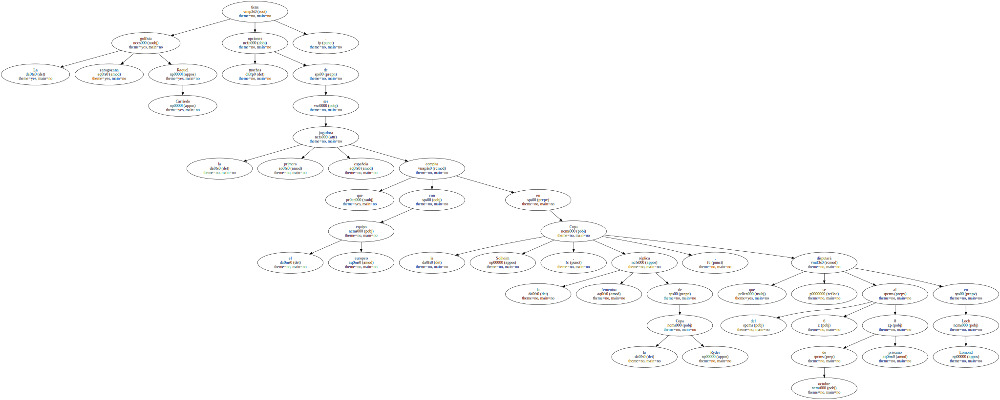
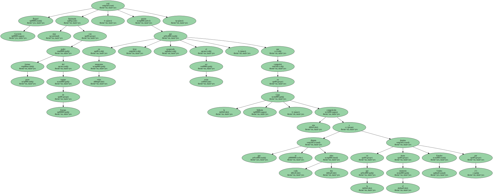
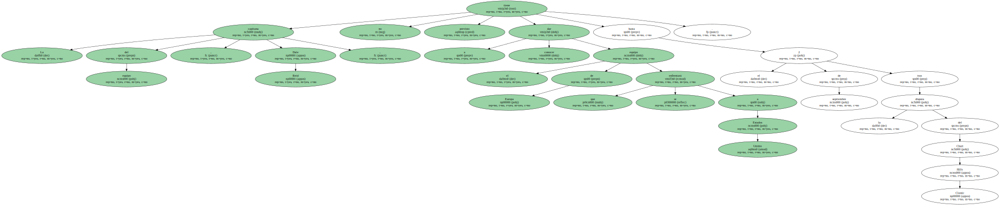
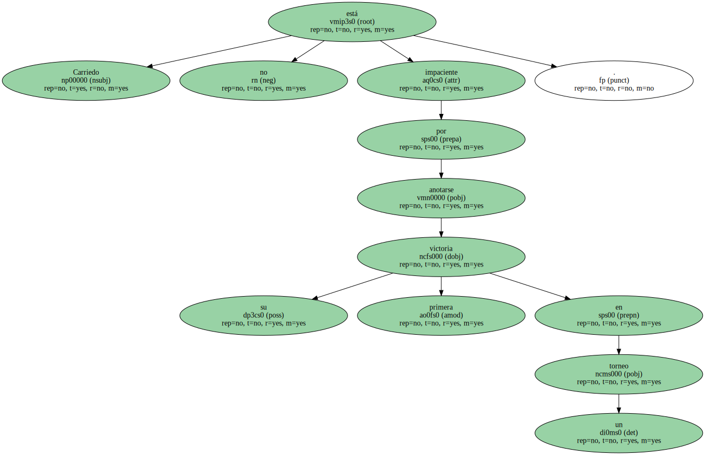
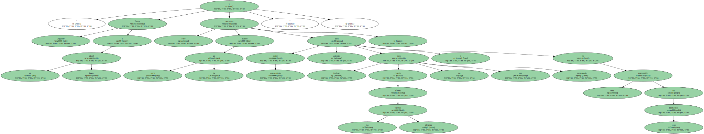
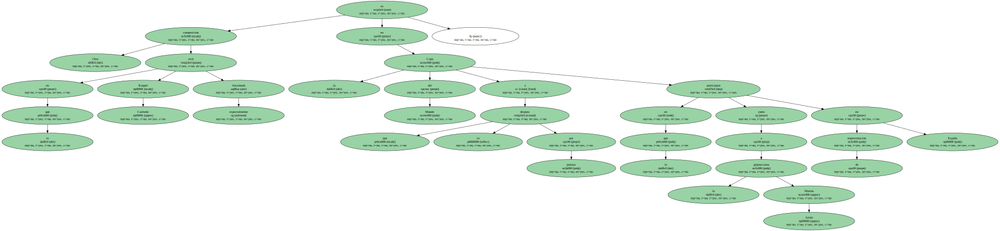
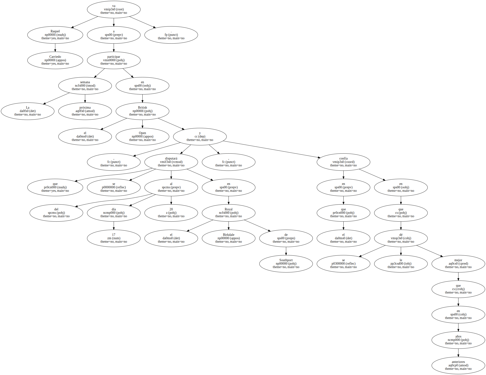
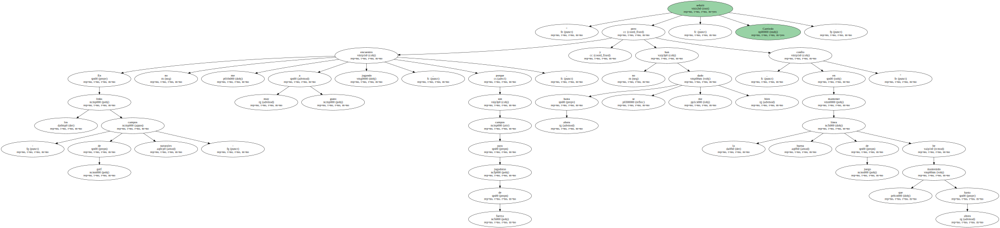
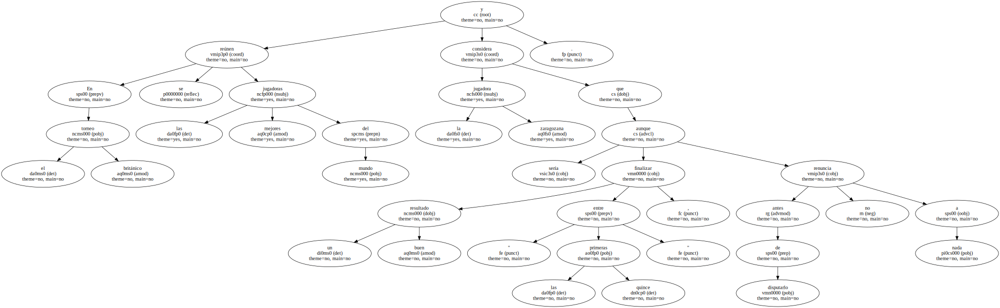

La golfista zaragozana Raquel Carriedo tiene muchas opciones de ser la primera jugadora española que compita con el equipo europeo en la Copa Solheim , la réplica femenina de la Copa Ryder , que se disputará del 6 al 8 de octubre próximo en Loch Lomond.
Raquel Carriedo está muy ilusionada con poder formar parte del equipo de Europa , puesto que en estos momentos tiene asegurado al ser sexta , que competirá en la Copa Solheim , una competición que se disputa cada dos años y en la que hasta el momento Estados Unidos domina por 2-1.
La capitana del equipo , Dale Reid , no tiene previsto dar a conocer el equipo de Europa que se enfrentará a Estados Unidos hasta el 2 de septiembre tras la disputa del Chart Hills Classic.
La jugadora zaragozana en declaraciones a EFE comentó que en la presente temporada se está encontrando a un nivel de juego " muy bueno " lo que le ha llevado a ser la cuarta en la clasificación europea.

" Este año he acabado cinco torneos del circuito europeo entre las diez primeras , algo que no es nada fácil , y en algunos he tenido opciones para ganar " , destacó.

Carriedo no está impaciente por anotarse su primera victoria en un torneo.
" Estoy jugando a un buen nivel y sólo necesito un poco de suerte para poder conseguirlo , además incluso cuando afronto las últimas vueltas no me noto presionada y he respondido bien en esos momentos ".
Otra competición en la que Raquel Carriedo está especialmente ilusionada es en la Copa del Mundo que se disputa por parejas y en la que participará junto a la guipuzcoana Marina Arruti en representación de España.
La próxima semana Raquel Carriedo va a participar en el British Open , que se disputará del día 17 al 20 en el Royal Birkdale de Southport , y en el que confía en que se le dé mejor que en años anteriores.
" En los links - campos de golf naturales - no me encuentro muy a gusto jugando , porque son campos para jugadoras de fuerza , y hasta ahora no se me han dado bien , pero confío en mantener la buena línea de juego que he mantenido hasta ahora " , señaló Carriedo.
En el torneo británico se reúnen las mejores jugadoras del mundo y la jugadora zaragozana considera que sería un buen resultado finalizar " entre las quince primeras " , aunque antes de disputarlo no renuncia a nada.
